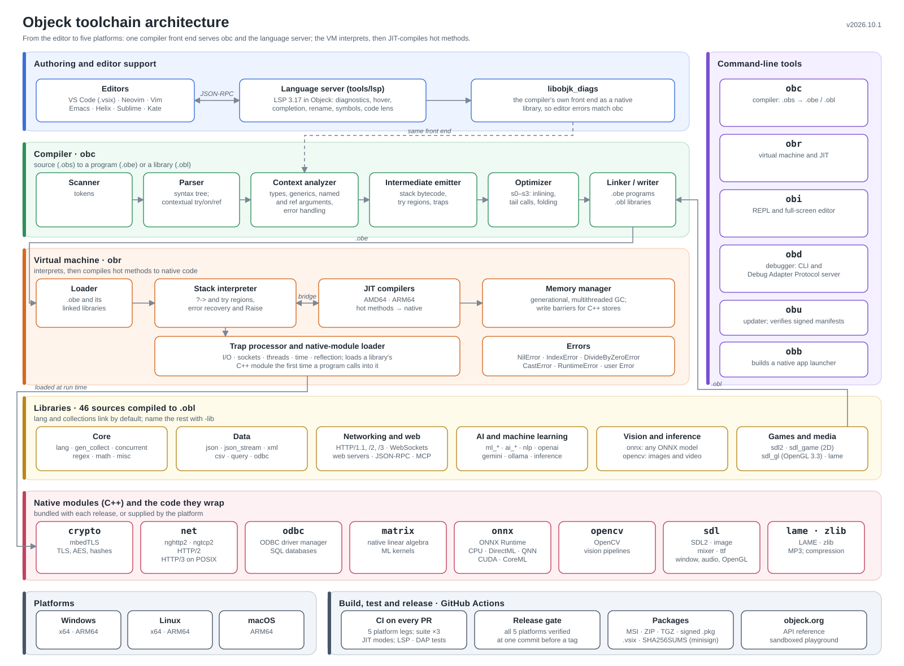

From Vibe to Silicon.
Write AI, ML, and network apps in fewer lines. No external packages. No build system hallucinations. Native ARM64 and x86-64 performance.
use API.OpenAI, API.OpenAI.Chat, Collection;
class CodeReviewer {
function : Main(args : String[]) ~ Nil {
token := System.IO.Filesystem.FileReader->ReadFile("api_key.txt")->Trim();
prompt := Pair->New("user", args[0])<String, String>;
completion := Completion->Complete("gpt-4o", prompt, token);
if(completion <> Nil) {
message := completion->GetFirstChoice()->GetMessage();
message->GetSecond()->PrintLine();
};
}
}Write, compile, and run code in your browser. 34 demos across 7 categories. Quick Start
Introduction to the language with concepts and sample code. AI Developer Guide
OpenAI, Gemini, Ollama, ONNX, and OpenCV with working code examples. Guides
Query, HTTP, JSON and RegEx, collections, game AI and editor setup, each with a program that was compiled and run. API Reference
Full documentation for all supported libraries. 350+ Solutions
Rosetta Code examples compared with other languages. Documentation
Architecture, the language reference, design notes, performance and tools. Changelog
Release notes and what's new across every version.
Language Highlights
JIT Compiled
Automatic hot-code detection with ARM64 and x86-64 native compilation. Direct JIT-to-JIT calling and generational GC with bump allocation.
AI-Native
First-party OpenAI, Gemini, Ollama, ONNX, and OpenCV — built in, not bolted on. AI writes pure logic against a stable API. Zero dependency hallucinations.
OOP + Functional
Generics with bounds and variance, closures and lambdas, records, string interpolation, nil-safe operators, and reflection. One language, both paradigms.
Machine Learning & AI
System.ML: linear and logistic regression, decision trees, random forests, gradient boosting, naive Bayes, k-NN, k-means, kernel and one-class SVMs, and outlier detection (isolation forest, LOF, elliptic envelope, DBSCAN, an autoencoder). System.ML.Lab runs experiments and writes result tables and SVG charts. System.AI: A*, minimax, Monte Carlo tree search, genetic algorithms, and Q-learning.
Data & Text
Query.Structured: a columnar in-memory database with SQL joins, grouping, expressions and indexes, reading CSV, JSON, XML, archives, Excel workbooks and ODBC databases as tables. System.NLP: tokenization, Porter stemming, TF-IDF, VADER-style sentiment, and BERT sentence embeddings over ONNX.
Web & Networking
A self-contained networking engine: TCP/UDP, DTLS, HTTP/1.1 + WebSockets, HTTP/2, HTTP/3/QUIC, and an embeddable Web.Server — all standard library, no packages required.
Concurrency
Threads and mutexes in the core library, structured concurrency with System.Concurrency (TaskScope, Task, Monitor), and a generational garbage collector with parallel marking.
Graphics & Games
SDL2 for 2D games and Game.OpenGL for 3D: shaders, meshes, textures, quaternions, normal maps, and a procedural skybox.
Industrial Tooling
LSP for 7 editors (VS Code, Sublime, Neovim, Emacs, Kate, ecode, Helix), a DAP debugger that stops in any thread, a REPL with a full-screen editor, and automated API docs.
Performance
virtual call, through an inline cacheCall costs on AMD64; benchmarks on an AMD Ryzen 9 7950X3D with Objeck v2026.9.1, median of three runs. Java and LuaJIT remain faster on several benchmarks — full results and methodology.
Cross-Platform
Every release is built and tested on all five platforms before it ships. Windows installers are Authenticode-signed, and the macOS package is notarized and needs nothing from Homebrew.
Architecture
One compiler front end serves obc and the language server; the VM interprets, then JIT-compiles hot methods for AMD64 and ARM64; libraries reach SDL2, ONNX Runtime, OpenCV and mbedTLS through native modules.

Deep Dives
AI-generated video overviews — start with the introduction, then the AI features and the internals.